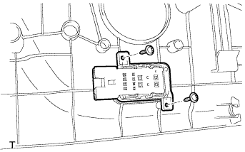
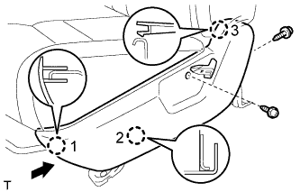
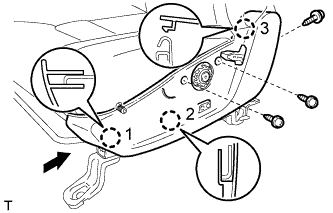
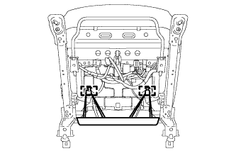
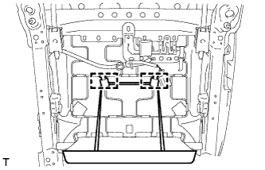
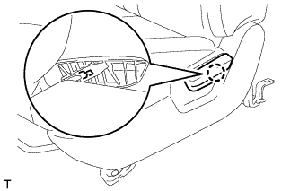
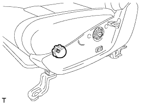
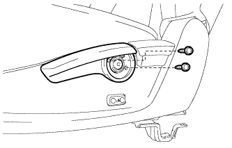
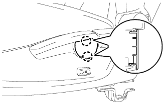

LUMBAR SWITCH (for Manual Seat) > INSTALLATION |
| 1. INSTALL LUMBAR SWITCH (w/ Lumbar Support) |
 |
Install the switch with the 2 screws.
| 2. INSTALL FRONT SEAT CUSHION SHIELD LH |
for 4 Way Seat Type:
 |
Attach the 3 claws in the order shown in the illustration to install the cushion shield.
Install the 2 screws.
w/ Lumbar Support:
Connect the lumbar switch connector.
for 8 Way Seat Type:
 |
Attach the 3 claws in the order shown in the illustration to install the cushion shield.
Install the 3 screws.
 |
w/ Seatback Board:
Attach the 2 rubber bands to the hooks.
 |
w/o Seatback Board:
Attach the 2 rubber bands to the hooks.
| 3. INSTALL RECLINING ADJUSTER RELEASE HANDLE LH |
 |
Attach the claw to install the reclining adjuster release handle.
| 4. INSTALL VERTICAL SEAT ADJUSTER KNOB (for 8 Way Seat Type) |
 |
Install the snap ring to the vertical seat adjuster knob.
Install the vertical seat adjuster knob to the front seat.
| 5. INSTALL VERTICAL ADJUSTING HANDLE LH (for 8 Way Seat Type) |
 |
Install the vertical adjusting handle with the 2 screws.
| 6. INSTALL VERTICAL ADJUSTER COVER LH (for 8 Way Seat Type) |
 |
Attach the 2 claws to install the vertical adjuster cover.
| 7. INSTALL FRONT SEAT ASSEMBLY LH |
Install the front seat assembly (Click here).